"Los buenos zapatos te llevan a buenos lugares"
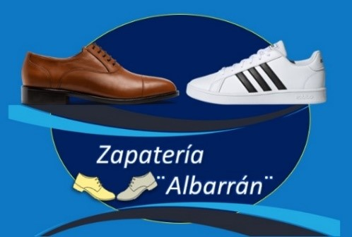
En Zapatería ¨Albarrán¨ la unica misión que tenemos es alegrar a las personas a usar un calzado adecuado y comodo, ya que te hace lucir bien, logramos el cuidado de tus pies y queremos lograr el más alto nivel de satisfacción del cliente, con la calificación y el aprecio de nuestros empleados.
Ser una empresa reconocida, brindar la confianza y la comodidad a nuestros clientes. Por lo que ofrecemos servicios de calidad para seguir creciendo.
Elaborar un plan de marketing que le permita a la empresa crear una superioridad competitiva de calzado, de tal manera que se consiga aumentar las ventas..
La historia del zapato comenzó en el año 10,000 A.C. Pinturas de esa época en cuevas de España y
Francia hacen referencia al uso del calzado. Los griegos empezaron a hacer moldes diferentes para
calzar el pie izquierdo y el derecho. En Roma, el calzado indicaba la clase social.
Los zapatos fueron hechos con lascas de piedra, quitaban la carne que quedaba en la piel. Se estiraba, se limpiaba,
se curtía y se secaba. Recortaban la piel según el tamaño del pie.
Jan Ernst Matzeliger (15 de septiembre de 1852 – 24 de agosto de 1889) fue un inventor nacido en Surinam,
que revolucionó la industria del calzado.
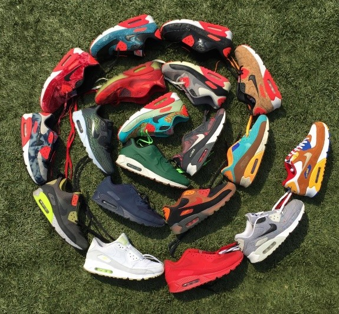
El calzado esta hecho de diferente material por ejemplo hay de:
Existe una gran variedad de material y colores para poder elaborar un calzado a tu gusto.
Es un accesorio indispensable ya que protégé la salud de nuestros pies y no podría generarnos problemas en el cuerpo
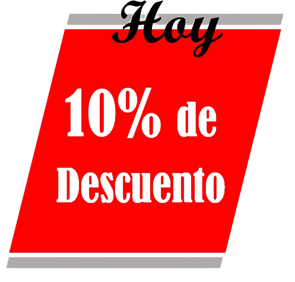
| Precio | Producto |
|---|---|
| $300.00 Zapato café para hombre Talla: 26 al 30 |
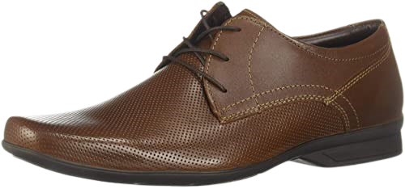 |
| $280.00 Tenis infantil unisex Talla: 20 al 25 |
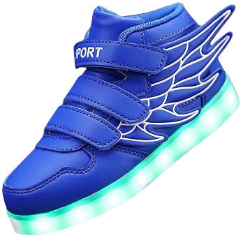 |
| $350.00 Tenis juvenil unisex Talla: 26 al 30 |
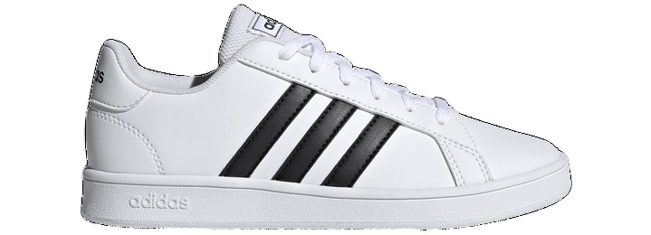 |
| $290.00 Zapato negro o blanco Talla: 26 al 30 |
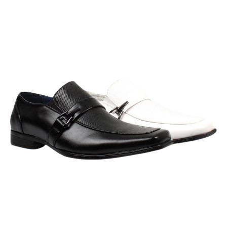 |
| $390.00 Zapato negro de vestir Talla: 26 al 30 |
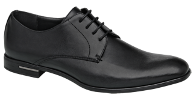 |
| $320.00 Mocasín azul Talla: 26 al 30 |
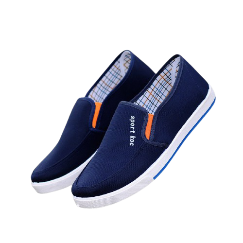 |
| $300.00 Zapato de vestir Talla: 26 al 30 |
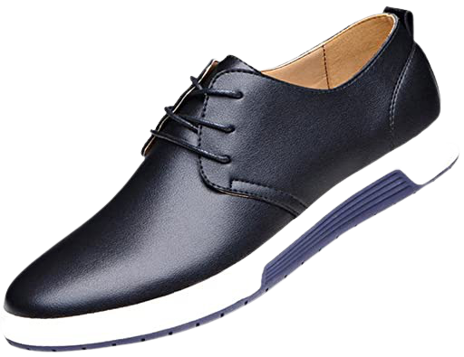 |
| $340.00 Tenis infantil Talla: 20 al 25 |
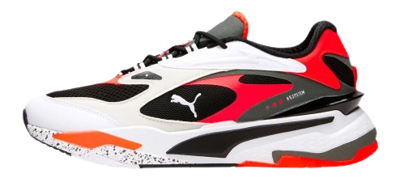 |
| $360.00 Tenis blancos Talla: 26 al 30 |
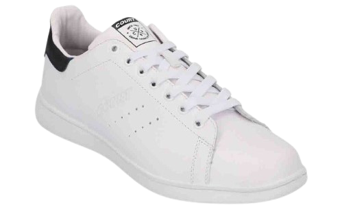 |
| $340.00 Tenis blancos Talla: 26 al 30 |
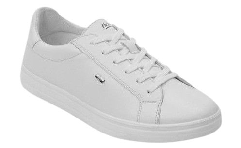 |
| $380.00 Mocasín azul marino Talla: 26 al 30 |
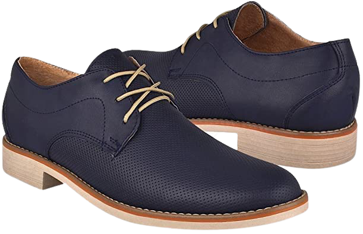 |